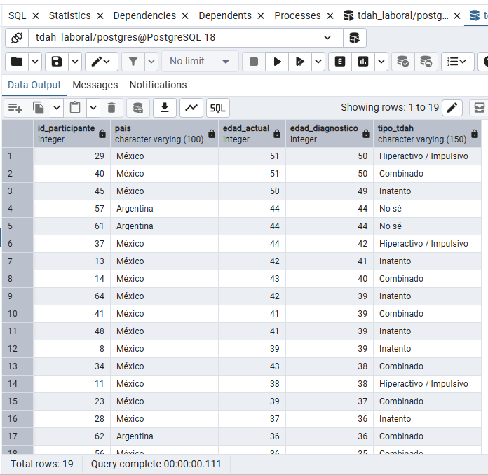
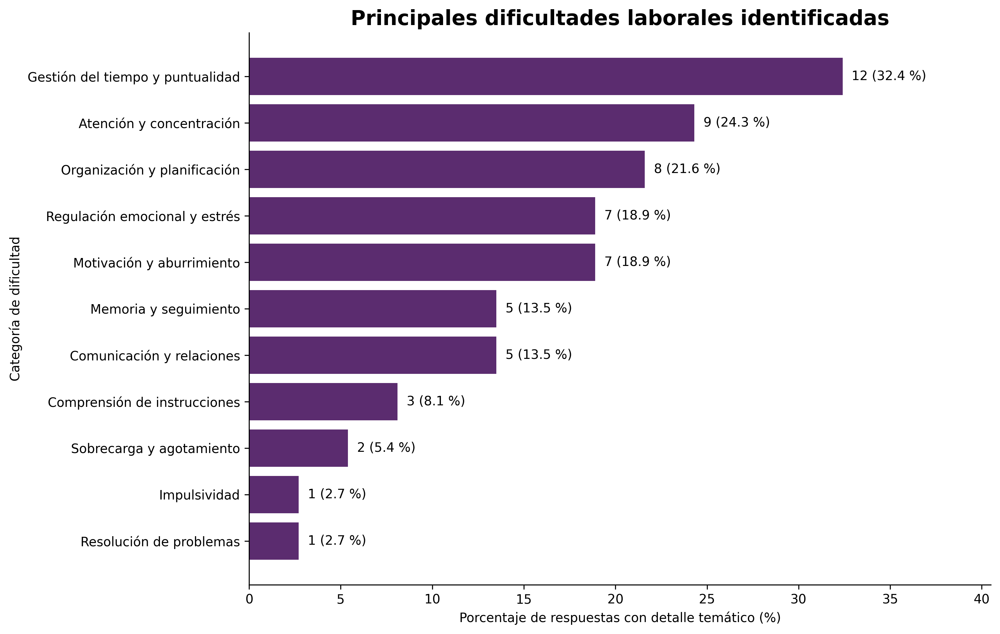
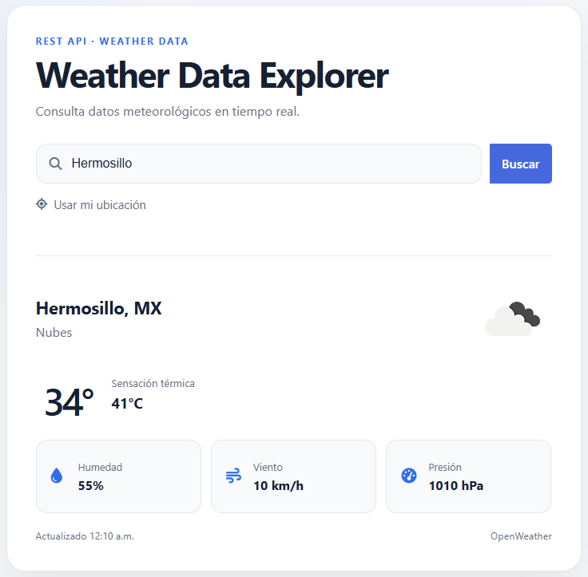
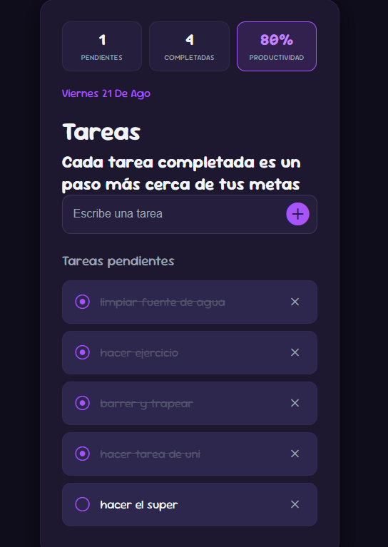

Alejandra González Madrid
Estudiante de Ingeniería en Sistemas Computacionales con background en ciencias clínicas. Especializada en ETL, Data Quality, SQL y Business Intelligence.
Experiencia auditando y normalizando bases de datos en entornos ERP/CRM corporativos (Oracle, Sage CRM) y construyendo flujos automatizados para transformar datos operativos en métricas estratégicas de toma de decisiones.
Habilidades Técnicas
Stack tecnológico enfocado en la cadena de valor del dato y desarrollo de software
Análisis & Bases de Datos
- SQL: PostgreSQL, MySQL (Joins, CTEs, Aggregations)
- Python: Pandas, NumPy, Matplotlib, Seaborn
- NoSQL: MongoDB
- Calidad del Dato: Data Cleaning, EDA & Profiling
BI & Automatización
- Power Query & Excel: Power Pivot, Macros/VBA
- ETL: Extracción, Transformación y Carga de datos
- Sistemas ERP/CRM: Sage CRM, Oracle ERP
- Dashboards: Reportes operativos dinámicos
Ingeniería & Metodologías
- Desarrollo Web: HTML5, CSS3, JavaScript, APIs REST
- Control de Versiones: Git, GitHub
- Agile: Scrum Fundamentals Certified (SFC)
- Entornos: VS Code, Google Colab
Proyectos Destacados
Casos prácticos de análisis de datos, desarrollo de pipelines y soluciones de BI

Análisis SQL de TDAH y situación laboral
Proyecto de análisis exploratorio de datos desarrollado con PostgreSQL a partir de una encuesta sobre TDAH y situación laboral. El objetivo del proyecto es aplicar conceptos fundamentales de SQL para estructurar, relacionar y analizar datos previamente procesados con Python y pandas.

TDAH laboral LATAM: análisis exploratorio de datos
Análisis exploratorio de una encuesta a 64 participantes sobre TDAH y situación laboral en Latinoamérica. Desarrollé el flujo completo de preparación y análisis de datos con Python: anonimización, data profiling, limpieza, transformación, validación de calidad, análisis exploratorio y visualización, incluyendo la clasificación temática de respuestas abiertas.

Weather Data Explorer | REST API & Serverless
Aplicación web para consultar, procesar y visualizar datos meteorológicos en tiempo real mediante OpenWeather API. Integra consumo de API REST, procesamiento de JSON, geolocalización y transformación de métricas, utilizando una función serverless en Vercel para proteger las credenciales de acceso.

Testimonios
Referencias de mentoras y colegas en el sector tecnológico
¿Buscas talento para tu equipo de datos?
Estoy lista para aportar como Practicante de Analista de Datos / BI. Si buscas a alguien con rigor analítico, conocimiento de SQL/Python y pasión por la calidad del dato, hablemos.
Enviar Correo